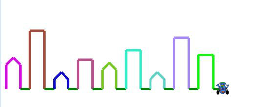

Houses

- Create a class called Houses and add a main method.
- Put the following code into the main method:
new Houses().run(); - Outside of the main method, make a new Robot (ask your teacher if you are not sure what this means). You can use whatever name you like for your robot.
- Outside of the main method, create a new void method called run() that takes no parameters like this:
void run() { } - In the run() method, set up your Robot's pen and speed. Then set the X and Y of your robot so that it is on the left side of the window near the bottom.
- Create a void drawHouse() method. Add code that tells your robot how to draw a flat-topped house of height 100 with grass after it (see picture).
- In the run() method add code to call the drawHouse() method.
- TEST YOUR PROGRAM! Do not continiue until you see a flat-topped house.
- Modify your run() method so the robot draws 10 houses.
- Change the drawHouse() method to take (int height) as a parameter. Draw 9 houses of randomly different heights (Hint: you will need to change the code in your run() method too)
- Now make the method take a String instead of an int.
“small” 60
“medium” 120
“large” 250
- Make the method take a color as well as a height. The houses are drawn in that color.
[optional] Set the scene to night by setting the window background to black - Create a method called drawPointyRoof() that will give a house a peaked roof.
- Make large houses have flat roofs and all the others be pointy.